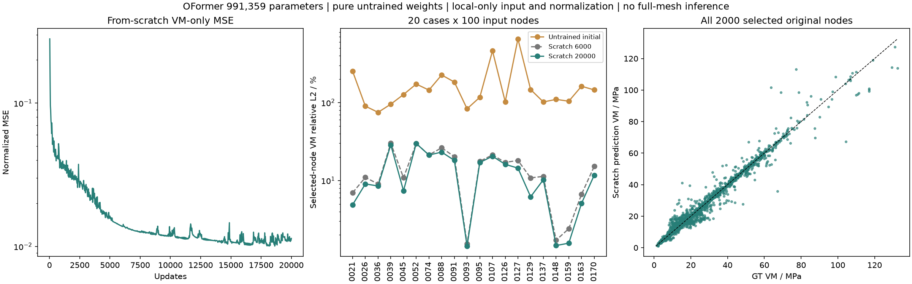
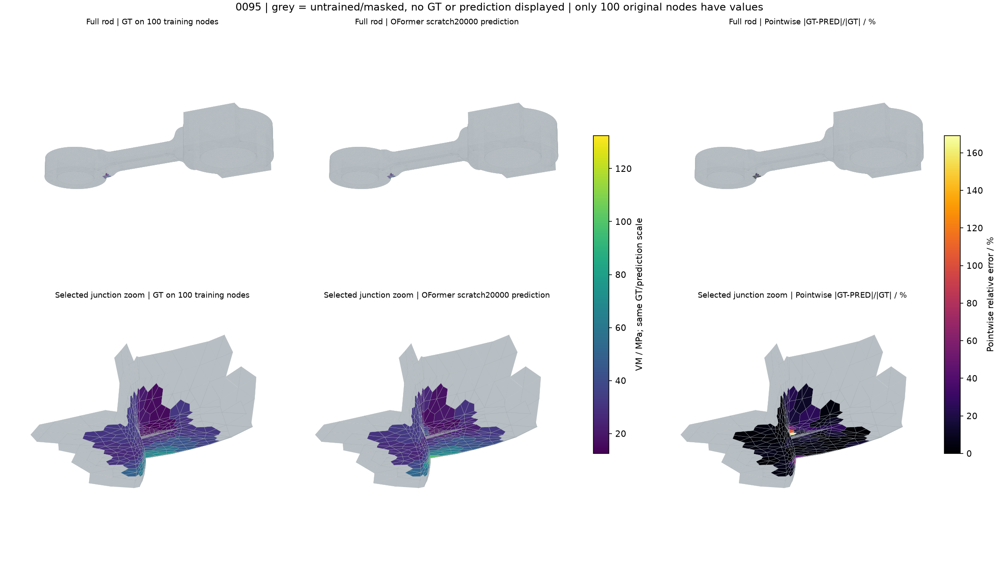

M03 局部训练
Connecting rod · OFormer_1M · 20 case × 每例100个原节点 · 纯未训练初值 · 应力拟合
训练预算完成，精度仍未达到1%。只输入、拟合所选连接处100节点；其余区域没有模型推理，GT与prediction均用灰色占位。只训练应力VM，未训练位移U；不将这组局部结果与M01全网格误差直接排名。
0095 · 连接处局部拟合
GT / 初始预测 / 训练后预测 / 两个误差窗。默认定位训练区；可复位查看整根连杆。切换6000至20000步，点选原节点或下载100点CSV。
默认采用顶点原值分块，无场值插值、无节点均值。GT与预测共用色标；误差另用共同色标。相对误差为 |GT − PRED| / |该点GT|，GT=0显示未定义。
固定步数结果
20例分别计算100个选定原节点的物理VM相对L2，再取算术平均。合并相对L2将2000点整体计算，二者分开展示。点击任意表头切换排序。
| 0 | 177.7145% | 127.5592% | 43.1866 |
| 500 | 24.3938% | 22.0756% | 7.4739 |
| 2000 | 20.9862% | 17.9449% | 6.0755 |
| 4000 | 17.3557% | 13.7419% | 4.6525 |
| 6000 | 14.4583% | 11.7498% | 3.9780 |
| 8000 | 13.8686% | 11.1543% | 3.7764 |
| 10000 | 13.7083% | 11.0461% | 3.7398 |
| 12000 | 13.3555% | 10.8084% | 3.6593 |
| 16000 | 12.8885% | 10.6367% | 3.6012 |
| 20000 | 12.8220% | 10.5931% | 3.5864 |

逐case结果
所有误差仅针对各自100个训练节点；small / big表示所选连接端，未使用GT或误差排序选点。
| 0021 | small | 100 | 251.3058% | 6.9645% | 4.8892% | 1.3018 |
| 0026 | big | 100 | 89.9380% | 10.9565% | 9.0346% | 1.4611 |
| 0036 | small | 100 | 74.8957% | 9.0193% | 8.4950% | 4.2272 |
| 0039 | big | 100 | 95.3149% | 30.0918% | 28.6371% | 4.6738 |
| 0045 | small | 100 | 126.8034% | 10.8560% | 7.3917% | 2.7164 |
| 0052 | big | 100 | 172.7092% | 29.8585% | 29.8350% | 5.4495 |
| 0074 | big | 100 | 144.6063% | 21.2743% | 21.2090% | 3.9903 |
| 0088 | big | 100 | 225.9029% | 26.2839% | 23.1383% | 2.9934 |
| 0091 | big | 100 | 183.3729% | 20.2212% | 18.1252% | 2.3606 |
| 0093 | small | 100 | 83.1435% | 1.5399% | 1.4405% | 0.6340 |
| 0095 | small | 100 | 116.8321% | 17.6302% | 17.0107% | 9.9331 |
| 0107 | big | 100 | 460.5200% | 21.2926% | 20.4740% | 1.1723 |
| 0126 | big | 100 | 102.4675% | 17.0485% | 16.1029% | 3.1903 |
| 0127 | big | 100 | 656.7183% | 18.1004% | 14.4263% | 0.9008 |
| 0129 | small | 100 | 146.7753% | 10.8023% | 6.1797% | 2.9365 |
| 0137 | small | 100 | 101.7901% | 11.2969% | 10.2362% | 3.5689 |
| 0148 | small | 100 | 109.8294% | 1.7155% | 1.4623% | 0.6956 |
| 0159 | small | 100 | 104.0984% | 2.4044% | 1.5699% | 0.9390 |
| 0163 | small | 100 | 161.8640% | 6.6388% | 5.0846% | 1.6298 |
| 0170 | small | 100 | 145.4014% | 15.1710% | 11.6986% | 3.0587 |
为什么局部100点仍难以充分拟合？
目前定位到一个具体例子：0095原节点6956与6954仅相距0.001432 mm（约1.43微米），输入只有XYZ不同，其余47维相同；GT应力却相差55.17 MPa。当前预测仍十分接近，未充分学到这个陡变。这是观测到的残差来源，不足以断言1%不可达到，也未据此判定GT有误或参数容量不足。
| 6956 | 77.303 | 105.165 | 113.135 |
| 6954 | 132.474 | 105.503 | 113.805 |
2000个输入均不完全相同，未发现完全相同输入对应不同GT。误差来源的进一步因果诊断尚未完成。

展开训练方法、参数、数据和下载
训练范围
复用20例纯拉伸TRAIN。按几何密度选取杆与端部连接处一片连续的100个原表面节点；不按标签或误差选点。每例只读取100×50输入，20例批处理；无全网格神经网络前向、无padding。归一化只使用所选2000点。
模型与损失
OFormer_1M，991359参数；width109、1 head、4层encoder和4层decoder。纯未训练初值，seed20261029。损失为所选2000点的归一化VM MSE；U损失权重0。区域外点不进入输入和损失。
优化与耗时
AdamW，初始学习率3e-4，warmup50，至6000步余弦衰减至1e-5；6000→20000保留同一模型、优化器、scheduler和RNG，在1e-5续训。weight decay0、梯度裁剪1、FP32无AMP；CPU 4线程。累计训练26分27秒，续训约17分23秒。
比较边界
只有局部TRAIN拟合，不代表完整应力场或泛化能力；与M01的全节点输入、U+VM损失及6000步预算不同，不称公平排名、等算力或作者基准原样复现。此前50点微调试验不计入本次结果。没有新增FE求解、物理节点或插值标签。